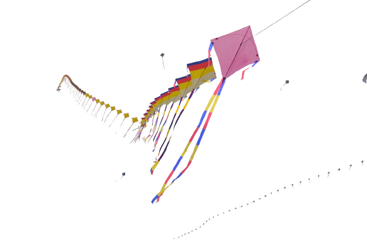

Introduction
Taekwondo, a Korean martial art known for its high kicks and fast, powerful strikes, has a rich and fascinating history that dates back centuries. Explore the journey of Taekwondo from its origins to its current global prominence.
Ancient Origins
The roots of Taekwondo can be traced to ancient Korea, where martial arts were developed as a means of self-defense and combat. Early Korean martial arts, known as "Taekkyeon" and "Hwa Rang Do," laid the foundation for what would later become Taekwondo.
Modern Evolution
In the mid-20th century, Taekwondo underwent a significant transformation, and various schools and organizations were established to promote and standardize the martial art. The World Taekwondo Federation (WTF), founded in 1973, played a crucial role in its global recognition.
Contemporary Taekwondo
Today, Taekwondo is practiced worldwide, and it is an Olympic sport. It emphasizes not only physical fitness and self-defense but also character development and respect. Taekwondo practitioners (often called "Taekwondoists") continue to pursue excellence in both skill and ethics.
Resources
Whether you're a seasoned practitioner or just beginning your Taekwondo journey, there are abundant resources available to enhance your knowledge and skills. Explore the following links for more information: